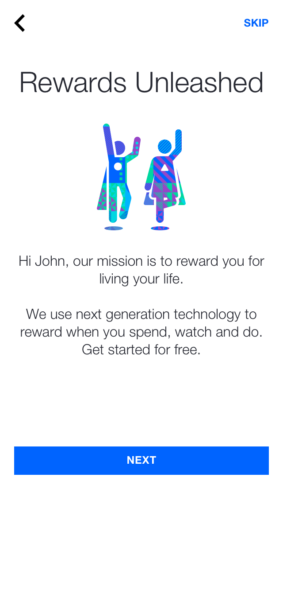
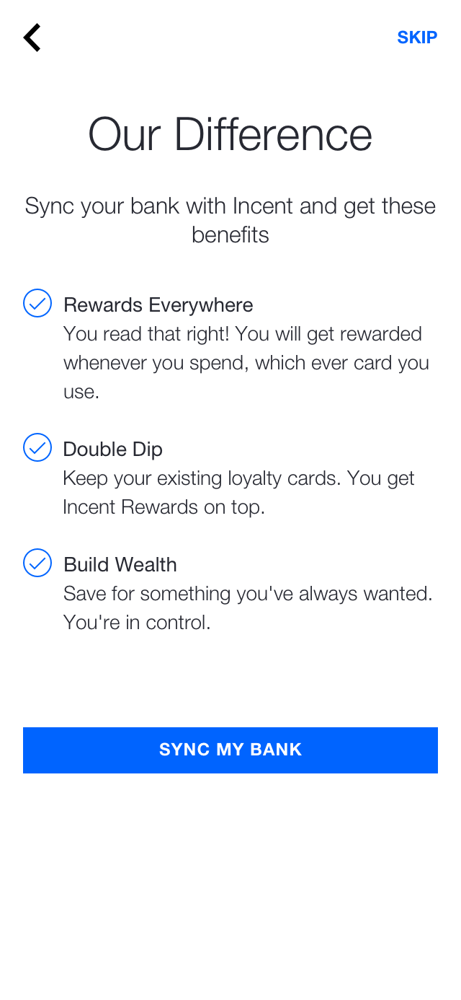
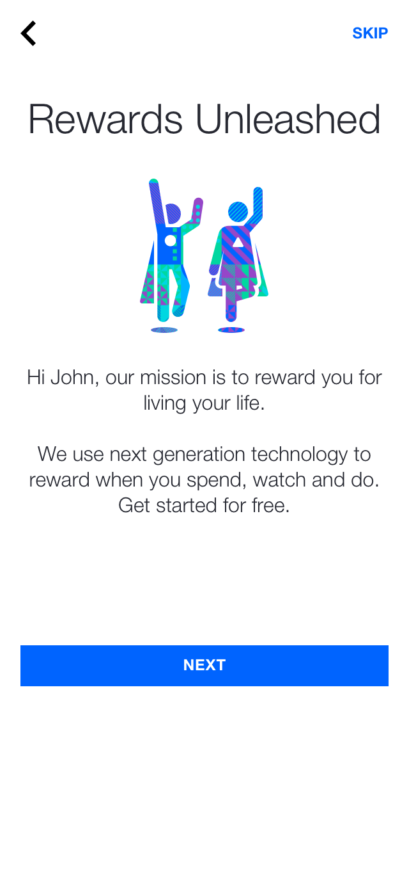
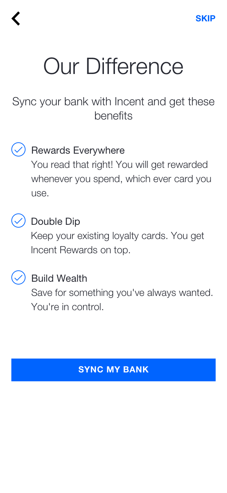

Flow and Language


 



In the onboarding funnel there was little drop-off in the introductory pages. The largest drop-off was 24% on a page called "Our Difference".
However, Hotjar recordings showed us the majority of users 'skimmed' through these text-heavy introductory pages rather than reading them, spending less than 3 seconds per page on average.
These screens were full of information the company wanted users to know, rather than what users needed to know.
Additionally there was two unnecessary steps, that were not required for users to enably insync platform: First name and a referral code. These screens were a missed opportunity to brief users of the benefits to enabling Insync as well as introduce them to the syncing process.
Solutions
- Remove unnecessary steps
- Cut down on copy per page
- Don't talk at customers, talk to them
- Incorporate concise messaging into 'How it works' structure


The first step was removing the pages users skimmed over and replacing them with pages of concise information that would answer the fundamental questions participants had.
Rather than explain in one text heavy page, different points were divided up into 3 'how it works' pages, with each concise point accompanied by a visual screen and a different colour.
The 3x steps were
- Sync Your Card
- Get Rewarded
- Start Saving
These pages explained a process in a simple format, but most importantly they conveyed the benefits of Insync in a relatable way rather than spruking the business' values.
The addition of these three screens with visual stimulus, slowed users down increasing the average time per page from 3 seconds to 10.
Furthermore, as each of these pages were presented as a 3x part slide show with animation, many users would revisit screens they previously skimmed over to re-read the offering. This showed an increased engagement with the pages content.